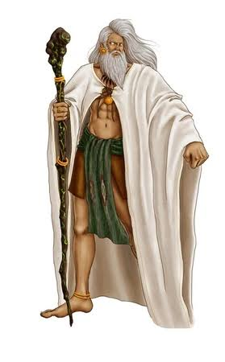
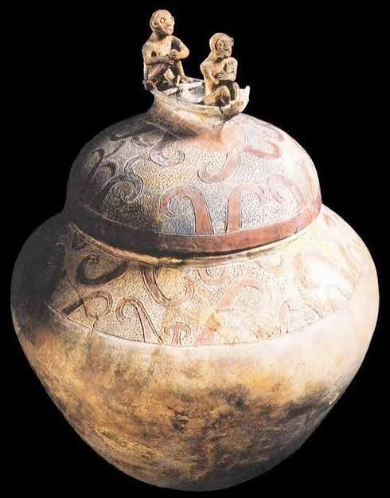
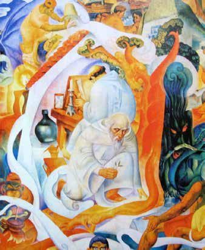
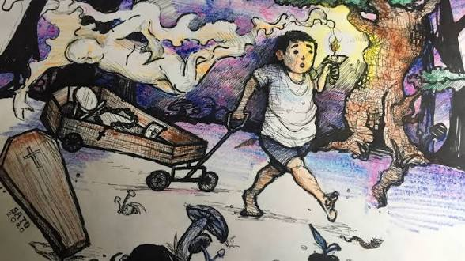

Sinaunang Paniniwala at Kultura ng mga Pilipino
Pagkilala sa mga sinaunang paniniwala, pamahiin, ritwal, diyos, at paraan ng pananampalataya ng mga Pilipino.
Pamahiin
Ang pamahiin ay mga paniniwala o kaugalian na ipinapasa mula sa isang henerasyon patungo sa susunod.
Bahagi ito ng tradisyon at kultura ng mga Pilipino at kadalasang nagmumula sa karanasan, paniniwala, at mga kuwento ng mga naunang henerasyon.
Halimbawa ng Pamahiin
Maglagay ng barya sa sapatos habang nag-eexam.

Ang Kaluluwa at Diwa ng Ating mga Ninuno
Pagmamasid sa Kalikasan
Pagbibigay-pansin sa mga pangyayari at pagbabago sa kapaligiran.
Karanasan
Mga aral na nabuo mula sa pang-araw-araw na buhay.
Paggalang sa Espiritu
Paggalang sa mga espiritu at mga ninuno.
Masaganang Pamumuhay
Pagnanais na magkaroon ng maayos at masaganang pamumuhay.
Bathala

Ang Bathala ang pinakamataas at pinakamakapangyarihang diyos ng mga Tagalog.
Sa sinaunang paniniwala, iniuugnay siya sa iba't ibang aspeto ng kalikasan at buhay ng mga tao.
Diyos ng Dagat
Kaugnay ng dagat at mga katubigan.
Diyos ng Ani
Kaugnay ng ani at kasaganaan.
Diyos ng Kagubatan
Kaugnay ng kalikasan at kagubatan.
Diyos ng Digmaan
Kaugnay ng pakikidigma at pagtatanggol.
Manunggul Jar
Ang Manunggul Jar ay isang sinaunang banga na ginamit bilang bahagi ng mga kaugalian sa paglilibing.
Isa ito sa mahahalagang ebidensya ng sinaunang paniniwala ng mga Pilipino tungkol sa buhay pagkatapos ng kamatayan.

Kapangyarihan at Gabay ng mga Naunang Ninuno
Pagbabantay
Pinaniniwalaang nagbabantay sa naiwang pamilya.
Gabay
Pinaniniwalaang nagbibigay ng gabay sa mga desisyon.
Pagpapala
Maaaring magdala ng pagpapala sa komunidad.
Babaylan vs. Katalonan

Babaylan
• Karaniwang tawag sa Visayas.
• Manggagamot.
• Pinuno ng ritwal.
Katalonan
• Tawag sa mga Tagalog.
• Tagapayo.
• Tagapamagitan.
Cycle
Ang mga ritwal ng mga sinaunang Pilipino ay isinasagawa sa mahahalagang yugto ng buhay.
Pagtatanim at Pag-aani
Mga ritwal na may kaugnayan sa pagsasaka at ani.
Panganganak
Mga ritwal para sa bagong miyembro ng komunidad.
Kasal
Mga ritwal na kaugnay ng pagsasama ng dalawang tao.
Pakikidigma at Paglalakbay
Mga ritwal bago ang mahahalagang paglalakbay o pakikidigma.
Pagpapagaling
Mga ritwal na isinasagawa para sa may sakit.
Mga Pamahiin
Ilan sa mga pamahiing ipinasa ng mga naunang henerasyon ay:
• Huwag tumuro sa punso.
• Ugaliing magsabi ng "po" at "opo".
• Huwag sumipol sa gabi.
• Huwag magwalis sa gabi.
• Huwag dumaan sa ilalim ng hagdan.

Ang mga sinaunang paniniwala at kultura ay nagbibigay sa atin ng mahalagang pananaw tungkol sa paraan ng pamumuhay, pag-iisip, at pagpapahalaga ng mga Pilipino noong unang panahon.